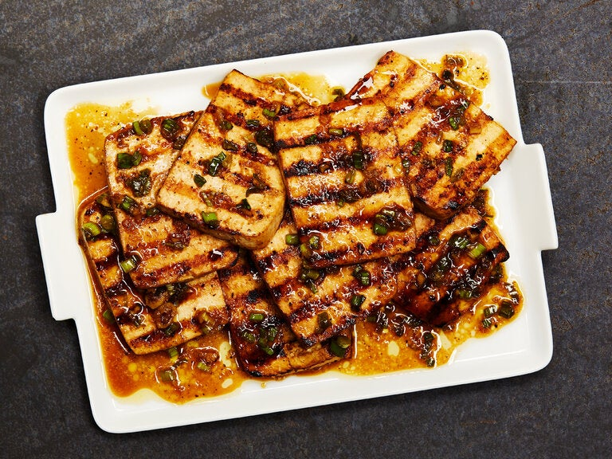

Grilled Tofu

Pouring hot marinade over tofu slices encourages faster absorption of flavors, eliminating the need to marinate overnight.
In a pinch, this method yields tasty results in three hours, but the recommended six hours deliver a much more complex,
richer flavored tofu. Grilled, it makes a versatile side dish and is delicious warm or at room temperature. Pair it with
steamed rice and a simple green salad, or turn the tofu into satisfying vegetarian sandwiches by tucking it into pita bread
with lettuce and avocado.
Ingredients
- 1 (14-ounce) block extra-firm tofu, sliced crosswise into eight equal slices (about ½-inch thick)
- 2 tablespoons safflower or canola oil, plus more for greasing grates
- 2 tablespoons minced garlic
- 1 tablespoon minced fresh ginger
- ⅓ cup low-sodium soy sauce
- 2 tablespoons turbinado sugar
- ½ teaspoon black pepper
- 2 tablespoons chopped scallions
Steps
- Arrange sliced tofu in a single layer on a paper towel-lined plate. Press top with more paper towels to remove excess water.
Arrange tofu in a 9-by-13-inch baking dish, or any shallow dish that can hold the tofu in one layer.
- In a small saucepan, combine oil, garlic and ginger over medium; bring to a simmer. Cook, stirring frequently,
until softened and fragrant, 2 minutes. Add soy sauce, sugar, pepper and ¼ cup water, and cook, stirring to dissolve
the sugar, about 2 minutes.
- Pour hot marinade over tofu. Gently turn tofu slices to evenly coat, then cover dish tightly with plastic wrap to seal in heat.
Refrigerate for 6 hours (or up to 8 hours), flipping tofu slices halfway through.
- Heat grill to medium and grease grates well (or heat a cast-iron grill pan over medium and lightly grease).
Grill tofu over direct heat until golden and caramelized, about 3 minutes per side.
- Meanwhile, transfer marinade to a small saucepan over medium and warm through, 1 to 2 minutes. Stir in scallions.
- Transfer tofu to a serving plate and spoon over the sauce. Serve warm.